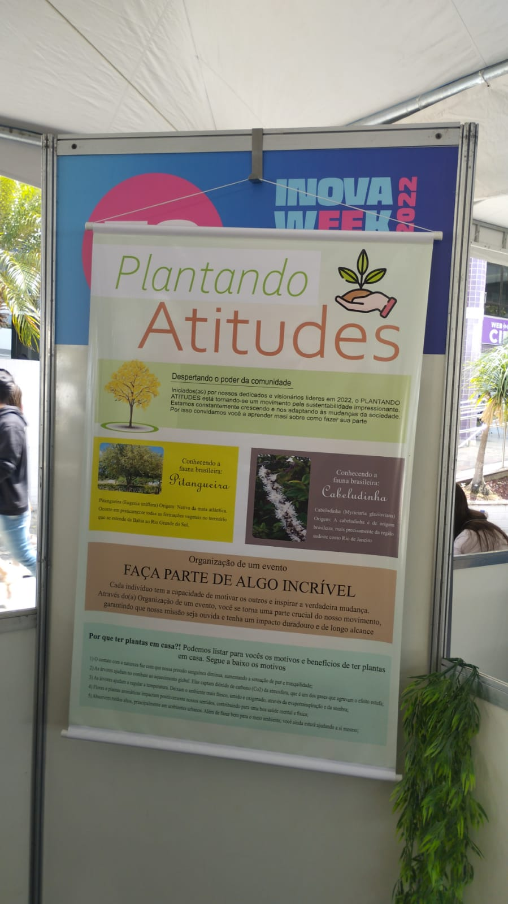
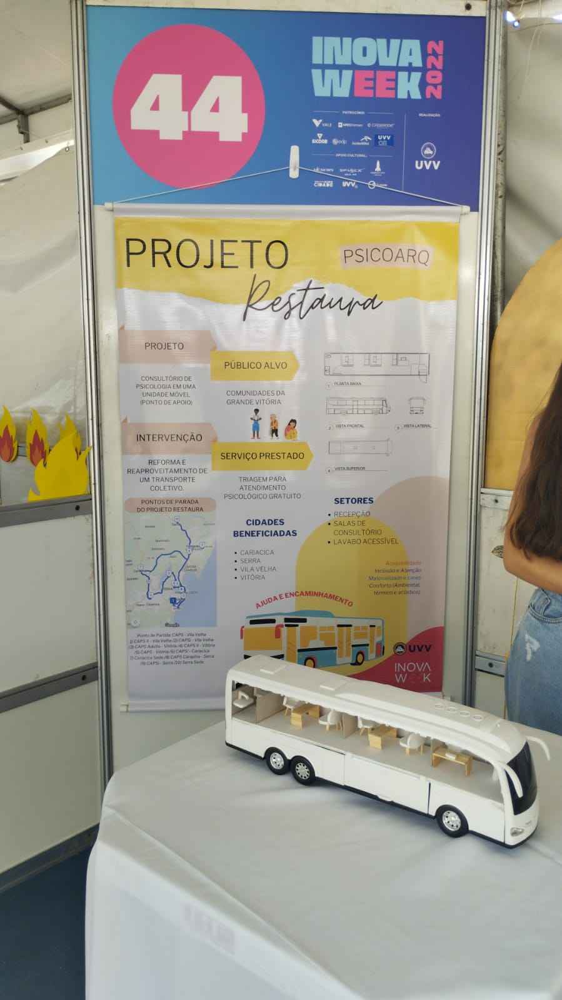
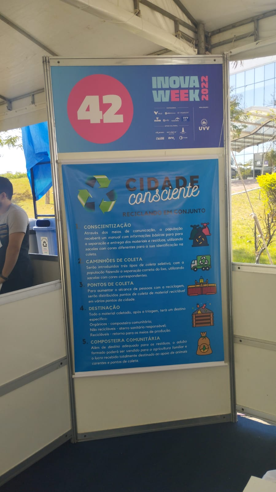
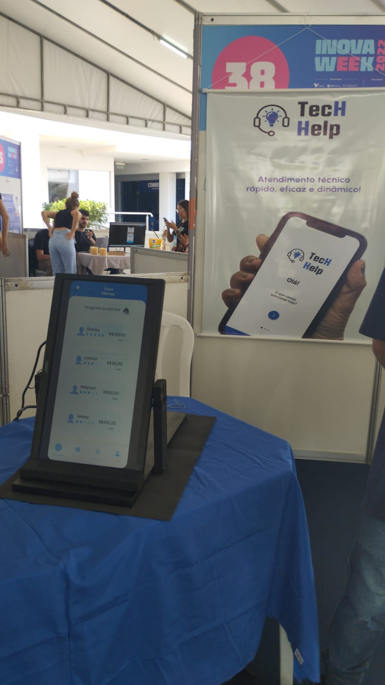

Experiencia com evento inova
Representação dos projetos analizados.

Plantando Atitudes
Protótipo de site sobre plantas
Cupom de desconto
Palestras e eventos
Blog
Encomenda de plantas e conhecimento sobre fauna
Lider: Nathalia Sampaio

Projeto Restaura
Consultório móvel
Patrocinado pelo governo
Sem fins lucrativos com público alvo sociedade carentes
Acesso para cadeirantes
Iluminação mais quente
Líder: Eduardo Pretti

Tem como objetivo instalar ponto de coletas de lixo, onde o lixo será separado por dias, onde cada dia
será um tipo de lixo, a ideia é tirar pessoas da ruas e transformar em coletores onde geraria
emprego, e o dinheiro arrecadado com a coleta será destinado aos animais
Diminuindo assim o lixo e gerando emprego e ajudando os animais com os lucros

O aplicativo é uma espécie de Techninja, onde uma pessoa que tem problema no celular,
notebook, pode entrar em contato com técnico, onde esse técnico irá estipular um valor, dependendo a
pessoa pode ver cotações de valores de outros técnicos
O técnico pode ter uma avaliação tipo uber